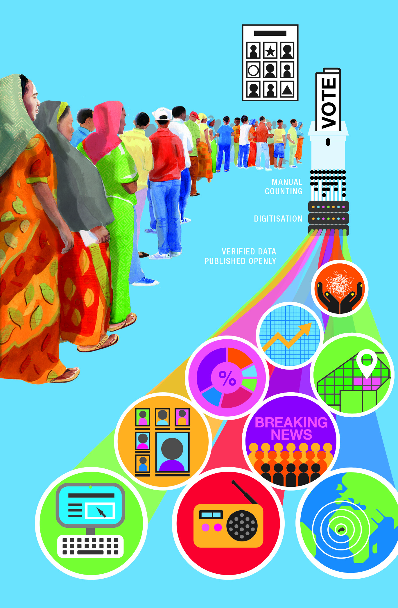
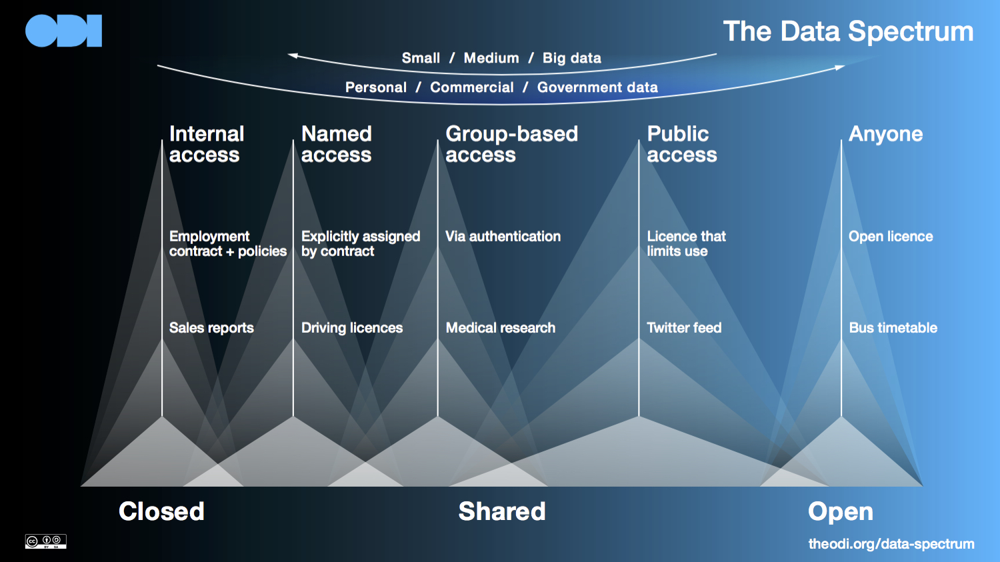

Open elections: lessons for open data from Burkina Faso and Zambia
We have just completed a case study of the open elections project in Burkina Faso, in partnership with the US-based election support organisation, IFES. As we were writing it, we were following an attempt in Zambia to release election results there openly and in real-time. Comparing the two led to some reflections on the need for an open data infrastructure for elections, which will frame our conversation at IODC this coming Thursday

The case study, Burkina Faso’s open elections documents the story of how Burkina Faso’s election commission worked with the country’s open data team to publish real-time, verified election results the day after the presidential elections of November 2015.
The elections took place in a time of uncertainty following Burkina Faso’s previous leader being ousted and an attempted coup.
The election commission saw speedy results publication as a way to minimise the high-risk, rumour-prone election count period that can last for several days in African countries.
Burkina Faso’s 2015 presidential elections took place without incident, and were regarded as a success by observers, with the other candidates conceding defeat before the result was announced at the end of that day immediately following the vote.
The context of that election was incredibly complex, and it is difficult to identify the factors that made it a success and the extent of the open data project’s impact. The case study therefore focuses on capturing the story of what happened through interviews with those involved.
What we do know is that the project succeeded in its immediate aim: to use open data technology, tools and skills to ensure that official election results were securely shared with as wide a group as possible as quickly as possible.
Real-time election results: comparing systems in Burkina Faso and Zambia
In distilling insights from Burkina Faso’s open elections that could be applied to other projects, comparing its system with that used in Zambia’s recent attempt to publish real-time results is useful.
The Electoral Commission of Zambia (ECZ) committed to releasing the results of the 11 August presidential elections as quickly as possible.The evening after election day, the first results emerged on the ECZ’s website.
However, progress stalled, and it would take three further days for the ECZ to announce that the incumbent had won, with the EU observation mission criticising the count as “slow”.
During that interim period, the ECZ called for citizens to ignore unofficial declarations of results that were circulating on social media. When the results were announced, the opposition party mounted a legal challenge against the result.
Three key differences and lessons for open data projects
Trawling through publicly available information, a few key differences emerged between the two polls in terms of results data transmission and publication.
The first and most striking difference was that the election process in Zambia as a whole was marked by transparency issues and irregularities. The EU election observation mission noted that “the ECZ did not allow international nor domestic observers to access a number of important activities, such as verification of results at national level… missing opportunities to enhance the transparency of, and trust in, the process.”
This highlights a challenge for open data initiatives that are localised on a single part of a particular process, and demonstrates that transparency in one part of the system on its own is not enough to create trust in a system.
The second difference relates to the availability of independent, alternative sources of information to compare the official information. In Burkina Faso, a civil society initiative had published the results of their members’ independent observations of the election count results – a parallel vote tabulation (PVT) – similarly quickly, allowing for the official results to be compared and independently verified by the media and others.
In Zambia, while CCMG, a local organisation supported by NDI, was carrying out a PVT, it was not published until after the result was known. On their Facebook page they noted that there were legal barriers to this, saying that “only the ECZ is constitutionally mandated to announce the official results”.
One of the benefits open data has brought is the ability to build new insights into a situation through alternative methods of data collection. For example, map-building projects like Map Kibera enable us to compare and contest official data, and can also be important for verifying and building trust in official information sources where the two align.
Finally, there were differences in the technology used to manage the data in the two elections. In Burkina Faso, the results there were transmitted electronically from count stations to the central office via a satellite transmission system. This sped up the process, though it required relatively expensive investment.
The transmission system in Zambia, by contrast, was manual.
This highlights the importance of thinking through the entire data system or pipeline when we are working on open data projects. We cannot separate work on open data from understanding data systems, including transmission, and storage systems and capabilities.
Conclusions: data infrastructure for election
Each of these lessons points to how a data infrastructure can help make the complex systems of election processes work better. Supporting this infrastructure means ensuring that multiple sources of data – from the location of polling stations, to campaign-spend data, election rolls and results data – are managed effectively, from production to dissemination.
Crucially, it also means managing access to this data in a way that balances openness with other concerns like privacy, competition and security. An ecosystem of actors – election commissions, political parties and candidates, civil society, election monitors, journalists, analysts and academics, and interest groups – need data to fulfill their roles. For them, an ideal data infrastructure is one that ensures they can access the data they need to do their jobs in a useful format.
This means making deliberate, considered choices about where different datasets sit on The Data Spectrum, from closed to open.

How this can affect the way we work is an open question, and one that we will be discussing at IODC in Madrid this Thursday, in a session at 15:30 in Room B. We look forward to seeing you there, in person or virtually through the hashtag #IODCelections.
Find out more about what the ODI is up to at IODC in Madrid this week, including sessions we are running and contributing to, here.